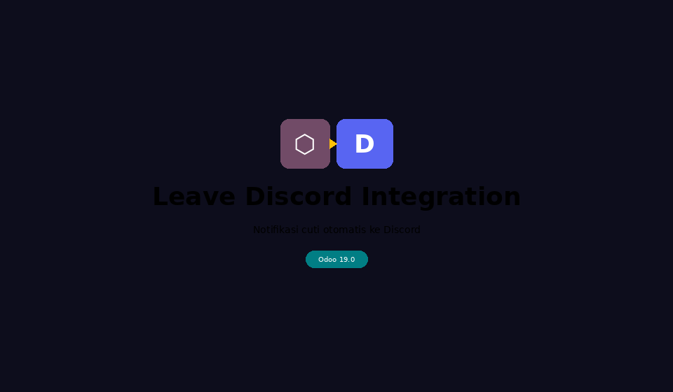

Notifikasi otomatis ke Discord saat karyawan mengajukan, menyetujui, atau menolak cuti — Odoo 19 × Discord Webhook
Semua yang dibutuhkan agar HR dan tim tetap sinkron lewat Discord
Kirim pesan Discord otomatis saat leave diajukan, disetujui, ditolak, atau direset ke draft.
Tombol "Kirim ke Discord" tersedia di header form leave untuk mengirim ulang kapan saja.
Mention langsung karyawan via Discord User ID — notifikasi sampai ke orangnya, bukan hanya di channel.
Webhook URL disimpan di System Parameters. Tidak ada halaman konfigurasi rumit.
Pesan mencakup nama karyawan, jenis cuti, tanggal, durasi, alasan, dan link langsung ke record.
Override hr.leave via ORM Odoo tanpa cron job — ringan dan tidak ada polling.
Alur lengkap dari pengajuan cuti hingga notifikasi muncul di Discord

odoo.confLalu buka Apps → cari "Leave Discord" → Install.
Discord Server → channel tujuan → Edit Channel → Integrations → Webhooks → New Webhook → Copy Webhook URL
Settings → Technical → Parameters → System Parameters
Settings → Users & Companies → Users → pilih user → tab Discord
Cara dapat User ID: Discord → Settings → Advanced → aktifkan Developer Mode → klik kanan nama user → Copy User ID
123456789012345678. Tanpa ID, notifikasi tetap terkirim namun tanpa mention personal.
| Key | Keterangan | Contoh Nilai |
|---|---|---|
| discord.leave.webhook.url | URL Webhook Discord channel penerima notifikasi cuti | https://discord.com/api/webhooks/xxx/yyy |
| Event | Aksi di Odoo | Isi Pesan |
|---|---|---|
| confirm | Karyawan submit leave request | 📋 Leave Request Diajukan |
| validate | Manager approve leave | ✅ Leave Request Disetujui |
| refuse | Manager tolak leave | ❌ Leave Request Ditolak |
| reset | Reset ke Draft | 🔄 Leave Request Direset ke Draft |
| manual | Klik tombol "Kirim ke Discord" | Sesuai state saat ini |
Webhook URL aman di System Parameter — hanya Administrator yang bisa melihat atau mengubah nilai.
Discord User ID bersifat numerik — ambil dari Discord Developer Mode. Salah ID = mention tidak sampai.
User tanpa Discord ID — pesan tetap terkirim ke channel namun nama ditampilkan sebagai teks biasa (tanpa ping).
Log tersedia — semua notifikasi sukses/gagal dicatat di Odoo server log dengan prefix ydod_leave_discord.
| Masalah | Solusi |
|---|---|
| Notifikasi tidak terkirim | Cek System Parameters → discord.leave.webhook.url, pastikan sudah terisi dan valid. |
| Tidak ada mention di pesan | Isi Discord User ID di profil user (Settings → Users → tab Discord). Aktifkan Developer Mode Discord untuk copy User ID. |
| Error 404 dari Discord | Webhook sudah dihapus di Discord. Buat webhook baru dan update System Parameters. |
| Error 429 Rate Limit | Terlalu banyak request. Discord batasi 30 req/menit per webhook. Kurangi frekuensi perubahan state. |
| Modul tidak muncul di Apps | Aktifkan Developer Mode → Apps → Update Apps List. Pastikan path di odoo.conf sudah benar. |